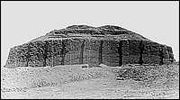
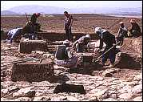

TimeAs each new group of people moved into the region, or took control of the government, they adopted some of the culture, traditions and beliefs of the people who had come before them. Therefore, certain aspects of civilization in Mesopotamia remained the same, and some changed over time.  Much of Mesopotamian history lay buried beneath the sand and soil for thousands of years. However, there were clues, such as the mounds known as 'tells', and the ruins of ziggurats, that treasures lay below the surface.

In the past two hundred years, people have begun to excavate objects and buildings which reveal the ancient history of this region.
| ||||||||